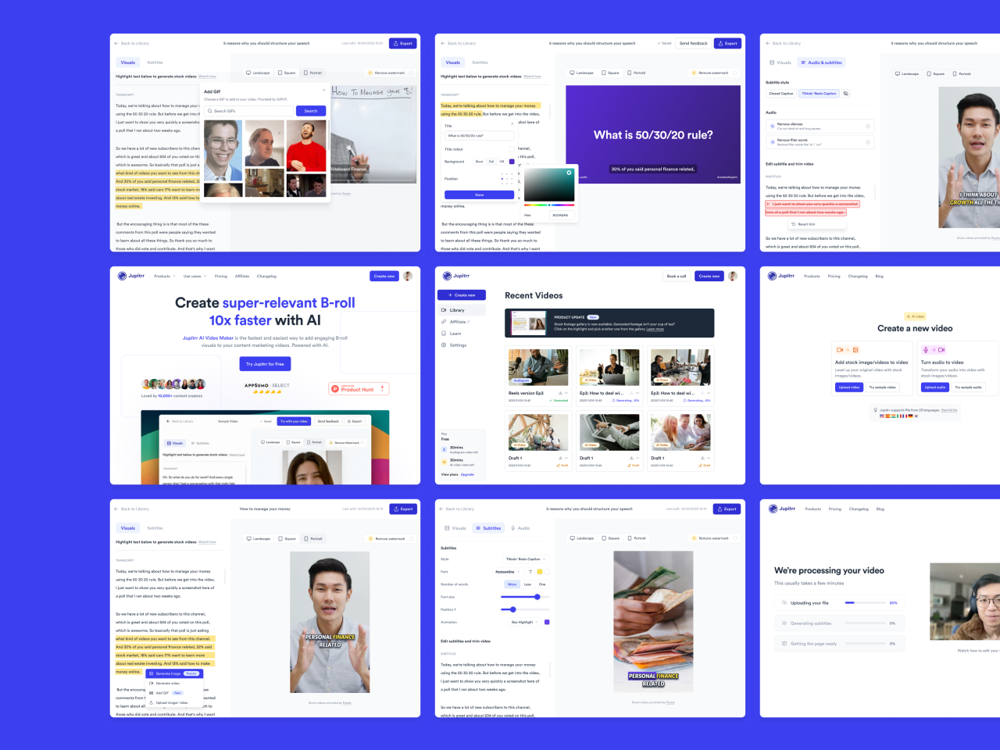
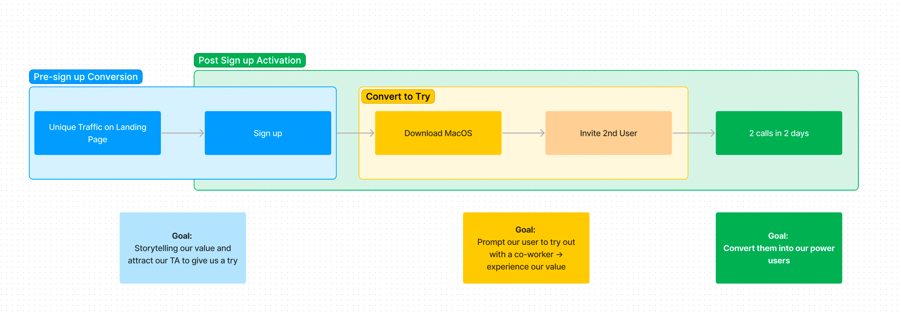
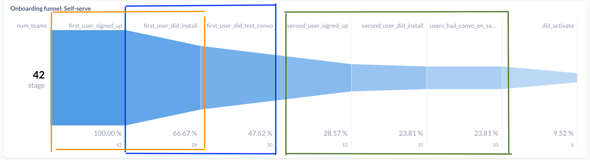
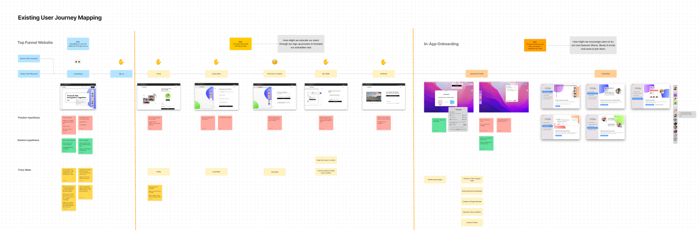
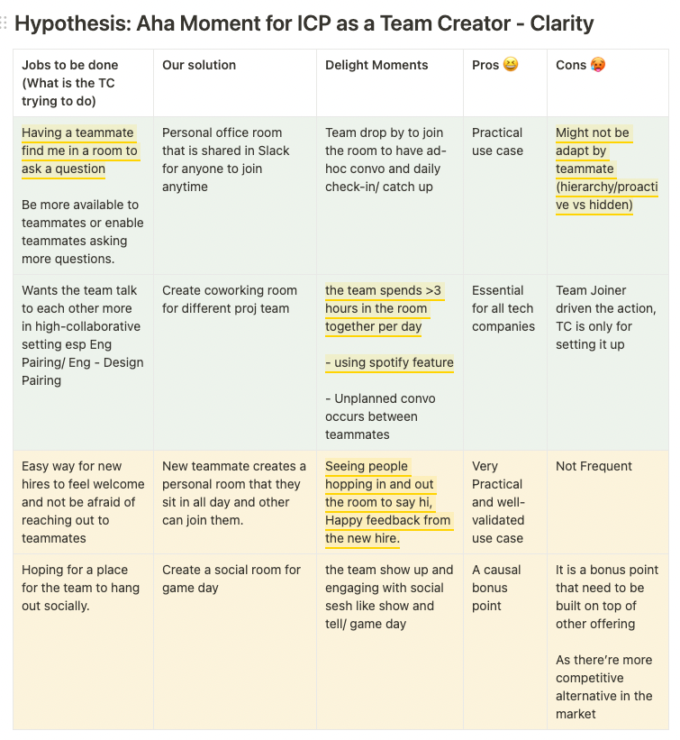
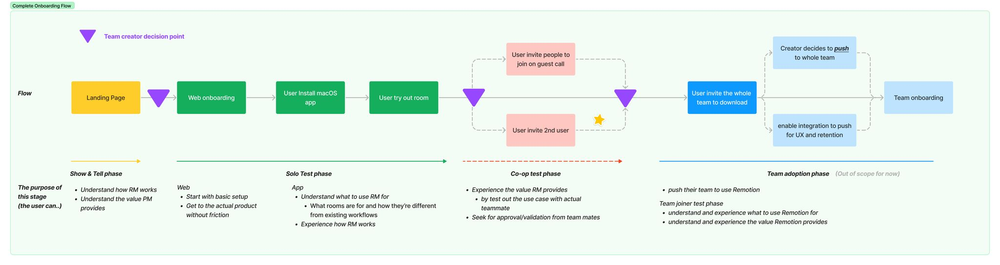
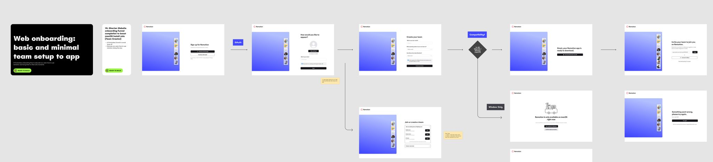
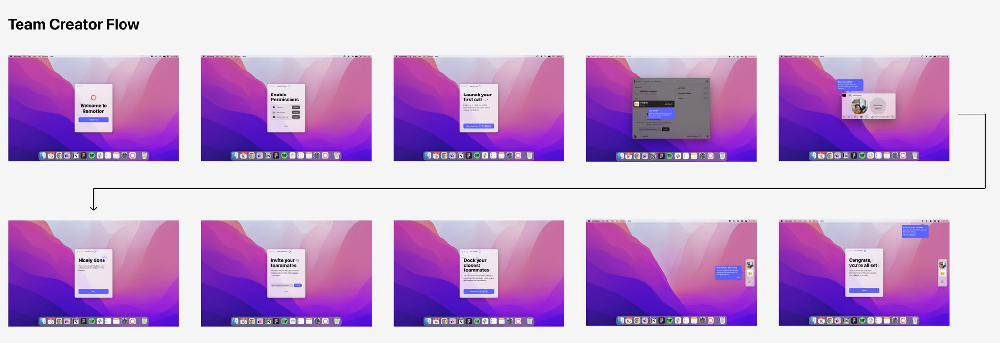
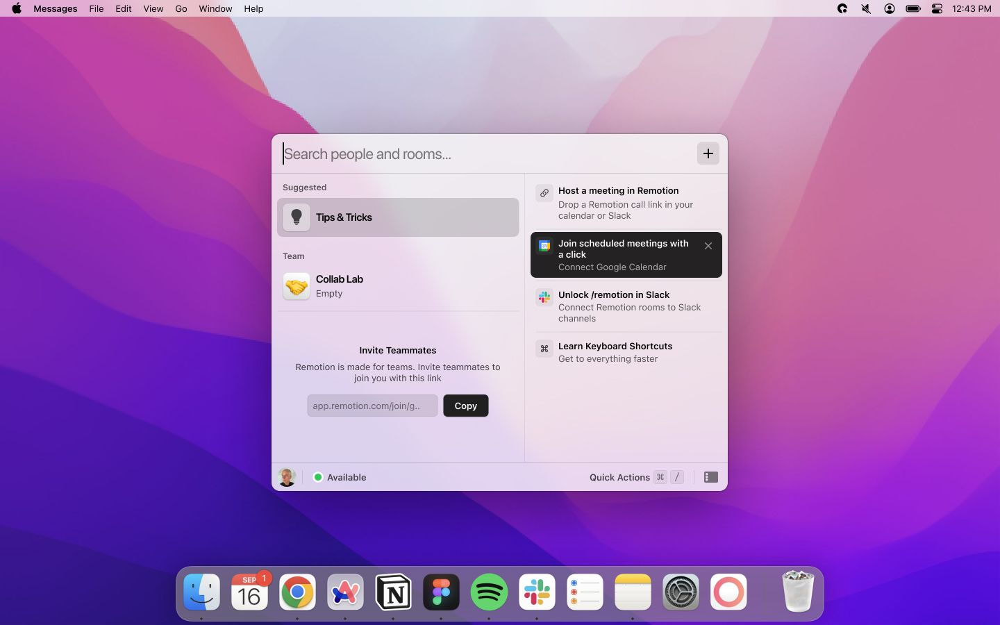
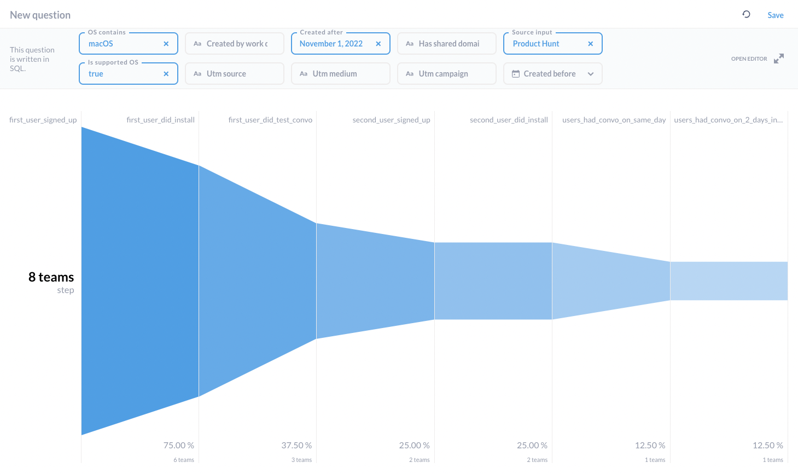

Nov 27, 2022
Improving onboarding for a virtual office macOS app - boost the activation rate by 10%
My work on improving Remotion (later Multi, acquired by OpenAI)’s onboarding as a product owner/designer, resulting in a >10% boost in the activation rate.

0. Backstory
Context
About the time I joined, Remotion made the switch from concierge onboarding (making demo calls) to self-serve onboarding, in order to facilitate product-led growth. Since we no longer had anyone showcasing our product with explanations and walkthroughs to our new users, the activation and retention rate had been significantly low into 9%.
Goal
The top-level project goal is to increase the number of teams to hit the activation goal - having 2 calls on 2 separate days.
*Our CEO Alex and I believed that if a team come back to make call on a second day is a good sign of an activated team - based on the rationale that most people make up their mind about the product on the first day.
Top-level constraints
- It’s fundamentally difficult to onboard a social product, a product that requires someone else (your team) to get the value.
- With Remotion being on macOS only, people are less willing to make the effort to download and try it.
- The user journey covers both the web and macOS, and iterations take longer than just the web.
- At the same time, we were still in the process to figure out our positioning and product features - we had to keep updating when the core experience iterated.
1. From Defining to Problem Framing
Top Level Flow
Before jumping into the wireframe or solution, we had to understand what we were dealing with. We started with mapping out the essential funnel for a new user to be activated on Remotion from start to finish. In the scoping of this project, my goal was to only focus on the Post-Sign up Activation which includes getting our new sign-ups to try with their co-worker and convert them into our active users.

Data-driven Context
Then we looked at our data tracking funnel and found out there were a few significant problems that were hurting our activation into a low 10%, including:
- The installation has a 34% drop-off rate
- First user install → First convo has a 29% drop off rate
- Having a second user sign up is significant towards activation

Design Research and User Feedback
At the same time, we put the current user journey under the microscope, screenshooting all steps we had, and analysing from a user-centred angle. We highlighted and discussed areas that create friction and impact the activation rate negatively.
This part was heavily benefited from having Pedro, our growth and Alexander, our CEO, as they had been gaining a lot of valuable first-handed feedback from our newly onboarded users before I joined the team. With that, we were confident to proceed with highly-convicted feedback, directly from our users.

Outcome: Problem Framing
With the combination of both quantitative (funnel data) and qualitative (user interview and journey mapping) findings, we hosted a collaborative jam session, inviting the team to brainstorm some of the hypotheses of what went wrong, and what was missing from the flow and ideas.
We narrowed down top-level hypothesis on why we have a low activation rate, including:
High Friction Funnel
- Users had to go through unnecessary steps to explore our product, way too long before they have the aha moment
- On average users spend more than 5 mins on web onboarding
Users don’t know how to use Remotion
- Even after successful installation, users find it hard to navigate and experience our features as we leave our user with an empty dock with no instruction.
- The big drop-off from installation → first call is a strong evidence. Theoretically all users should join a call when they were exploring the app.
2. Project Brief and Roadmapping
Now we narrowed down the 2 key problems, we were able to build a new design brief around it and began the solution phrase.
Project Brief:
How might we create an easy-to-understand and frictionless onboarding experience, where our new users can experience the value of using Remotion as soon as possible?
3. Refine Solution Direction
What’s our aha Moment?
To start off solution phrase, we had to figure out what is the value of Remotion first, what is the “Aha Moment” when people decided to use Remotion. We talked with a few newly onboarded team creators, and carefully listed out all the delighted moments they felt.
We had a strong conviction that “having a teammate finding me in a room for quick questions or jam” was the way to go. It did not only highlight the unique selling point - where you can easily ping for quick collaborations, it also showcased both product design surfaces, the dock and the call experience.

Shortest Way to Value
Once we figured out the core WHAT in the experience, we headed down into HOW by creating user flow and low-fidelity prototyping. We considered different ideas, including Download Upfront Approach, Web Mode First Approach, before settling on Quick Setup on web and Experience on macOS Approach.
During this phrase, we also took a look on similar products like Around.co, switchboard.app and gather.town. However as our core features only available on macOS, the Web Mode First Approach which is commonly used from them was not a good fit for Remotion.
In our approach, we’re able to:
- Bring team creator to macOS and into a call as soon as possible
- Leverage our Web Guest Mode for the team joiner (2nd user) to test
- Showcase the great call experience on macOS app (Cursor Sharing, Screenshare Drawing, Spotify music sharing)
- Showcase the quick collaborative environment the Dock and the Launcher provide and attract 2nd user to download on macOS

4. Design Outcome
As a complex onboarding journey across different surfaces (web/ macOS app), I divided it into different phrases with their own goals and purposes and started working on the design.
Web onboarding
A basic and minimal team setup journey to get to the macOS app as soon as possible
- Shorten the web onboarding flow from 7 steps to 4 steps
- Remove unnecessary integration prompt and place it at the end of the onboarding flow as it brought no impact here
- Integrating features like Domain Capture and window waitlist to minimise distractions

macOS onboarding
A guided step-by-step tour for our new user to explore the great call experience
- Get users into the default room as one of the first step
- Prompt them invite a 2nd user to join via Guest Call Link
- Introduce the quick collaborative environment the Launcher and the Dock, two unique surfaces Remotion offers.

Post-macOS onboarding
A onboarding state for the Dock and the Launcher and a Tips & Tricks section on the Launcher.
- Facilitate business goal: Invite teammates to the app
- Helping users understand the best way to use the app (Keyboard shortcut, Calendar Integration)

5. Setup Tracking for Success
Conditional Data Tracking
To make sure the work was impactful, we not only set up new tracking for the new flow, but we also added different conditioning to the query. We can now easily distinguish the performance of the new user journey without getting distracted by non-targeted users (non-macOS/ non-tech team), which helps us to make more data-driven product decisions and facilitate A/B testing in the future.

6. Shipping and Reflection
As a result of this project, our activation rate for our target persona (Engineering team on macOS) had once gone up to 36% and averaging 25%.
I’m delighted to have this amazing opportunity to own this complex project and work with different people to get this done from scratch. Working with Growth to understand our top-of-funnel traffic, keep jamming with our CEO to update on the latest overall positioning changes and roadmapping, and working with both Typescript and macOS engineers to get the design into implementation. There was a lot of ambiguity as well as great collaboration across the team, I’m proud to get involved and bring impact to Remotion’s new users.
Special thanks to Marisa Chan, Viren Mohindra for providing feedback on this article.
Written by Tsz Hoi Lee
27 Nov 2022